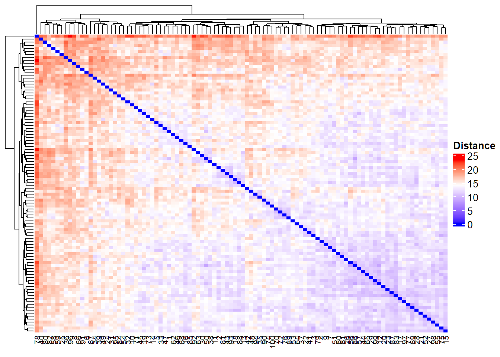
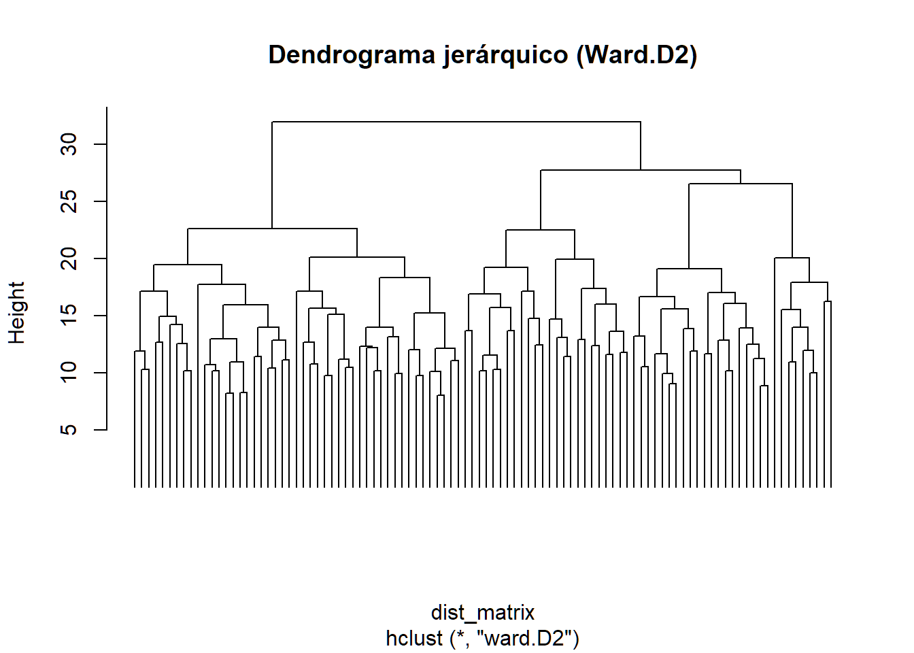
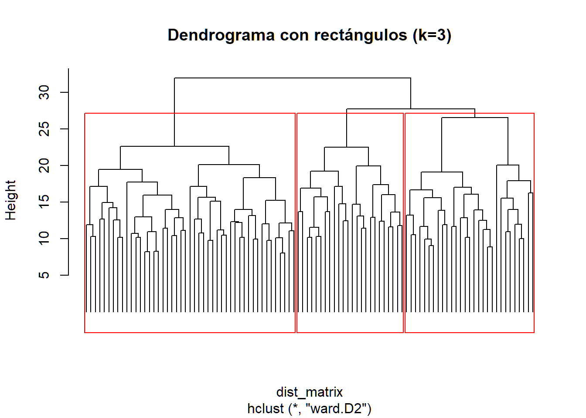
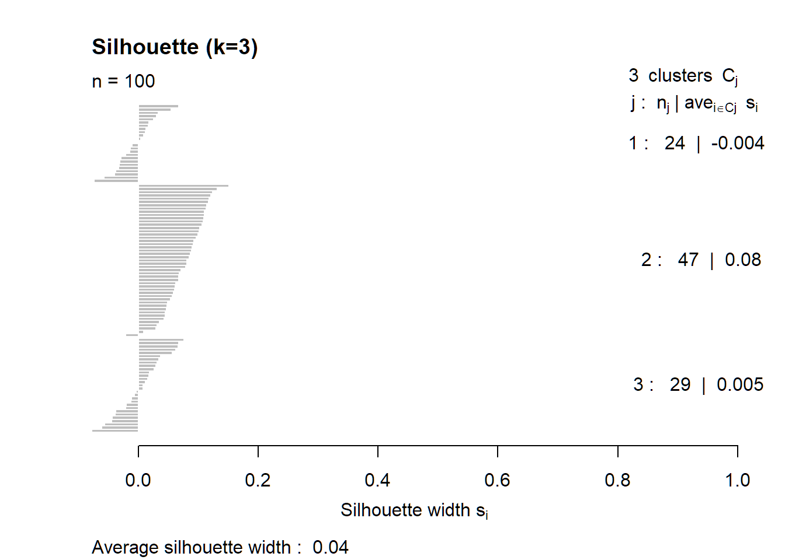
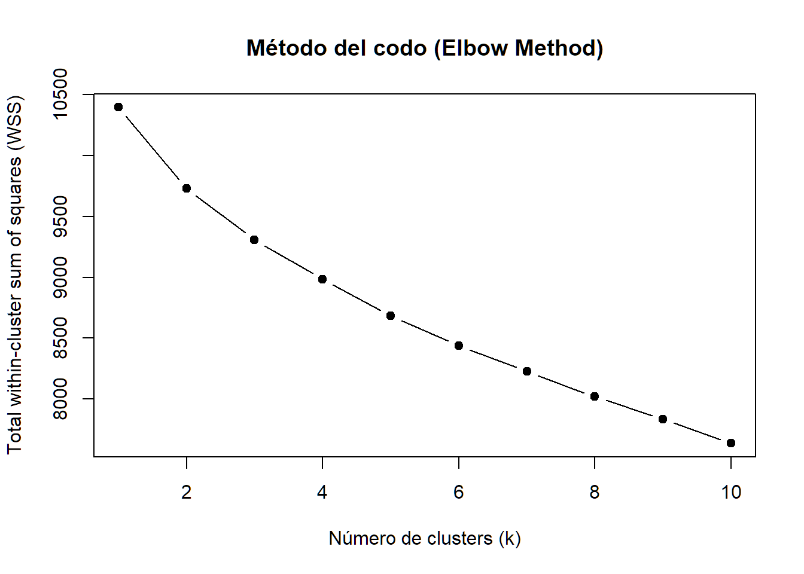
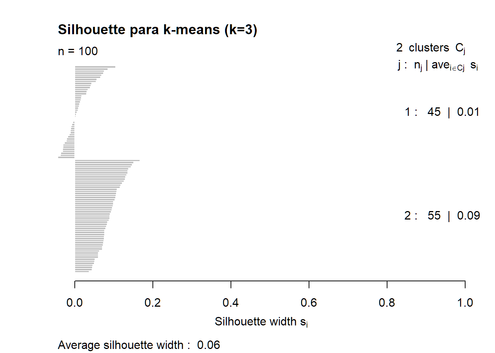
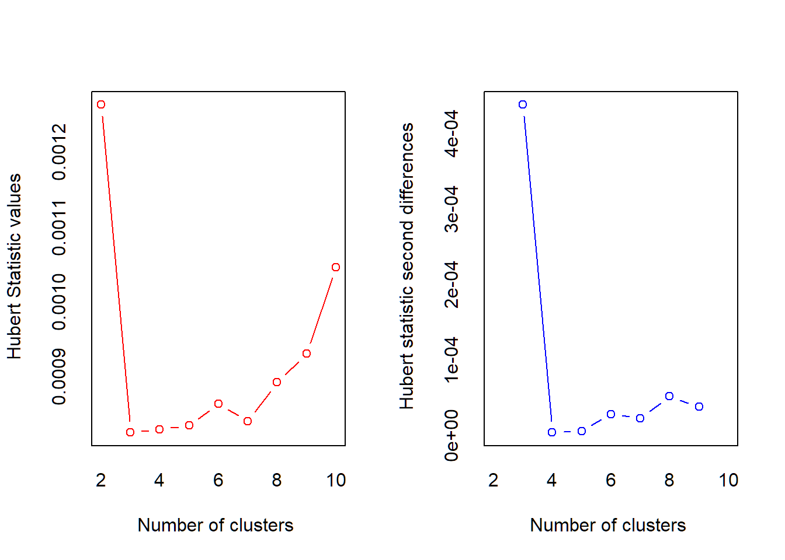
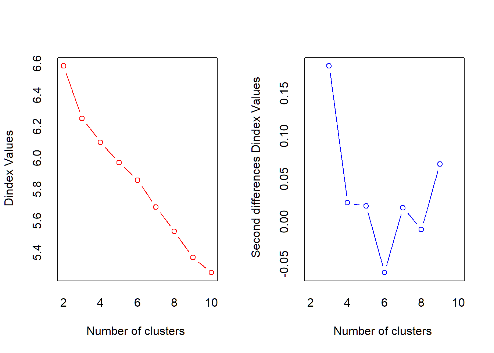

anthropometrics <- read_csv("data/AI4FoodDB/DS1_AnthropometricMeasurements/anthropometrics.csv")
vital_signs <- read_csv("data/AI4FoodDB/DS6_VitalSigns/vital_signs.csv")
lifestyle <- read_csv("data/AI4FoodDB/DS2_LifestyleHealth/lifestyle.csv")
biomarkers <- read_csv("data/AI4FoodDB/DS4_Biomarkers/biomarkers.csv")
OSQ <- read_csv("data/AI4FoodDB/DS8_SleepActivity/OviedoSleepQuestionnaire.csv")
IPAQ <- read_csv("data/AI4FoodDB/DS7_PhysicalActivity/IPAQ.csv")
Total <- anthropometrics %>%
full_join(vital_signs, by = c("id", "visit")) %>%
full_join(lifestyle, by = c("id")) %>%
full_join(biomarkers, by = c("id", "visit")) %>%
full_join(OSQ, by = c("id", "visit")) %>%
full_join(IPAQ, by = c("id", "visit"))11 Introduction to Clustering
Clustering is a data analysis technique whose objective is to group similar observations into clusters, such that:
Individuals within the same group are as similar as possible (high internal homogeneity).
Individuals from different groups are as different as possible (high external heterogeneity).
In other words, clustering seeks to discover hidden structures in the data without the need for prior labeling (unsupervised learning).
11.1 Common Types of Clustering
- Hierarchical Clustering: constructs a hierarchy of groups represented by a dendrogram. It can be:
Agglomerative: each observation starts in its own cluster and they are progressively joined together.
Divisive: it starts with a single cluster that is then divided.
- Partition-based clustering: for example, K-means, which divides the data into a fixed number of clusters, optimizing the internal distance.
11.2 Distance between individuals
The distance between individuals is a numerical measure of how different two observations are.
The most common are:
Euclidean distance: [ d(x_i, x_j) = ]
Manhattan distance:
[ d(x_i, x_j) = {k=1}^p |x{ik} - x_{jk}| ]
Where (x_i, x_j) are vectors of the variables of individuals (i) and (j).
11.3 Distance between clusters
In hierarchical clustering, the distance between clusters is defined according to a linkage method, such as:
Single linkage: minimum distance between elements of both clusters.
Complete linkage: maximum distance between elements of both clusters.
Average linkage: average of all pairwise distances.
Ward: minimizes the total variance within each cluster.
11.4 0. Data loading and creation of the Total object
# 1️⃣ Función para limpiar valores "<x"
clean_numeric <- function(x) {
x <- trimws(x) # quitar espacios
x <- ifelse(grepl("^<", x),
as.numeric(sub("<", "", x)) / 2, # reemplazar <x por x/2
x)
suppressWarnings(as.numeric(x)) # convertir a numérico (NA si no se puede)
}
# 3️⃣ Detectar variables que deberían ser numéricas pero están como character
# 4️⃣ Excluir las columnas de identificación
# 3️⃣ Detectar columnas de texto que contienen números con "<"
char_vars <- names(Total)[sapply(Total, is.character)]
char_vars [1] "id" "daily_meals"
[3] "defecation" "urination"
[5] "cigarettes_day" "alcohol"
[7] "exercise" "crp_mg_dl"
[9] "ige_ui_ml" "2_1_initiate_sleep"
[11] "2_2_remain_asleep" "2_4_usual_waking_up"
[13] "2_5_excessive_somnolence" "6a_hours_sleep"
[15] "6b_hours_bed" "6c_sleep_efficiency"
[17] "10a_snoring" "10b_snoring_suffocation"
[19] "10c_leg_movements" "10d_nightmares"
[21] "10e_others" "categorical_score" char_vars <- setdiff(char_vars, c("id", "visit", "defecation", "alcohol",
"exercise", "categorical_score"))
# 5️⃣ Convertir solo las columnas problemáticas
Total <- Total %>%
mutate(across(all_of(char_vars), clean_numeric))
# 5️⃣ Promediar por individuo y visita
Total_mean <- Total %>%
group_by(id) %>%
summarise(across(where(is.numeric), ~ mean(.x, na.rm = TRUE)), .groups = "drop")# 1️⃣ Separar variables de identificación
id_vars <- Total_mean %>% select(id, visit)
num_vars <- Total_mean %>% select(-id, -visit, -period,
-cigarettes_day, -cigars_day, -pipe_day,
-others_psychological)
# 2️⃣ Aplicar imputación por kNN (por defecto k = 5)
set.seed(123)
num_imputed <- VIM::kNN(num_vars, k = 5, imp_var = FALSE)
# 3️⃣ Reconstruir el dataset completo
Total_imputed <- bind_cols(id_vars, num_imputed)
# 4️⃣ Revisar resultado
#summary(Total_imputed)num_scaled <- scale(num_imputed)
dim(num_scaled)[1] 100 10511.5 1. Distance matrix
We calculate Euclidean distances between individuals, which quantify how far apart they are in multidimensional space.
dist_matrix <- as.matrix(dist(num_scaled, method = "euclidean"))
# Heatmap de las distancias
Heatmap(dist_matrix,
name = "Distance",
show_row_names = FALSE,
show_column_names = TRUE,
cluster_rows = TRUE,
cluster_columns = TRUE,
column_names_gp = gpar(fontsize = 8),
col = colorRamp2(c(min(dist_matrix), mean(dist_matrix), max(dist_matrix)),
c("blue", "white", "red")),
heatmap_legend_param = list(title = "Distance"))
11.6 Dendrograma
hclust performs hierarchical clustering, merging individuals step by step according to Ward’s criterion, which minimizes the total within-cluster variance.
The dendrogram visualizes the merging process: the height of each merge indicates the distance between clusters.
dist_matrix = dist(num_scaled, method = "euclidean")
hc <- hclust(dist_matrix, method = "ward.D2")
plot(hc, labels = FALSE, hang = -1, main = "Dendrograma jerárquico (Ward.D2)")
k <- 3
clusters <- cutree(hc, k = k)
table(clusters)clusters
1 2 3
24 47 29 plot(hc, labels = FALSE, hang = -1, main = "Dendrograma con rectángulos (k=3)")
rect.hclust(hc, k = k, border = "red")
sil <- silhouette(clusters, dist_matrix)
mean_sil <- mean(sil[, 3])
cat("Silhouette promedio (k=", k, "): ", round(mean_sil, 4), "\n", sep="")Silhouette promedio (k=3): 0.0374plot(sil, main = paste0("Silhouette (k=", k, ")"))
11.7 Elbow’s Graph
kmax = 10
wss <- numeric(kmax) # dentro de suma de cuadrados
for (k in 1:kmax) {
km <- kmeans(num_scaled, centers = k, nstart = 25)
wss[k] <- km$tot.withinss
}
plot(1:kmax, wss, type = "b", pch = 19,
xlab = "Número de clusters (k)",
ylab = "Total within-cluster sum of squares (WSS)",
main = "Método del codo (Elbow Method)")
11.8 K medias method
K-means is an unsupervised clustering algorithm widely used to partition a dataset into a predetermined number of groups, denoted by k. The method aims to assign each observation to one of the k clusters such that the within-cluster variation is minimized. More precisely, k-means minimizes the total within-cluster sum of squares, which measures how close the observations in each cluster are to the corresponding cluster centroid.
The algorithm proceeds iteratively in three main steps:
Initialization: Select k initial centroids, typically using random draws or algorithms such as k-means++.
Assignment step: Each observation is assigned to the nearest centroid according to a chosen distance metric, usually Euclidean distance.
Update step: New centroids are computed as the mean of all observations assigned to each cluster.
These two steps (assignment and update) are repeated until convergence, which occurs when cluster memberships no longer change or when the reduction in within-cluster variation becomes negligible.
Because the choice of k strongly influences the results, it is common practice to inspect different values of k and use diagnostic tools such as the elbow method or the silhouette coefficient to evaluate the quality of the clustering solution. K-means performs best when clusters are compact, roughly spherical, and have similar sizes, and when variables are properly scaled.
set.seed(123)
km3 <- kmeans(num_scaled, centers = 3, nstart = 25)
km3$cluster [1] 1 3 2 3 3 3 3 3 3 1 3 3 3 2 2 3 3 3 3 3 2 2 3 2 1 2 2 3 3 3 1 1 1 2 2 3 2
[38] 3 3 1 2 2 3 3 3 3 1 2 2 3 3 3 2 1 3 3 3 1 1 2 3 3 3 2 3 3 2 1 2 2 1 2 3 2
[75] 2 2 2 2 3 1 3 1 3 1 2 3 3 3 2 2 3 3 3 2 1 3 1 3 3 2table(km3$cluster)
1 2 3
18 32 50 11.9 Sillohuete graph
The silhouette index is a commonly used metric to evaluate the quality of a clustering solution. It measures how well each observation fits within its assigned cluster compared to other clusters.
For each observation i:
- (a(i)): the average distance between observation i and all other points in the same cluster (within-cluster cohesion).
- (b(i)): the smallest average distance between observation *i) and all points in any other cluster (separation from the nearest alternative cluster).
The silhouette value for observation i is defined as:
[ s(i) = . ]
The silhouette ranges from –1 to 1. Values close to 1 indicate that the observation is well matched to its cluster, values near 0 suggest overlapping clusters, and negative values indicate potential misclassification. The average silhouette index across all observations provides an overall measure of clustering quality and is commonly used to compare solutions with different numbers of clusters.
set.seed(123)
km3 <- kmeans(num_scaled, centers = 2, nstart = 25)
dist_matrix <- dist(num_scaled)
sil_km <- silhouette(km3$cluster, dist_matrix)
mean_sil_km <- mean(sil_km[, 3])
cat("Silhouette promedio k-means (k=10): ", round(mean_sil_km, 4), "\n", sep="")Silhouette promedio k-means (k=10): 0.056plot(sil_km, main = "Silhouette para k-means (k=3)")
11.10 NbCLust
library(NbClust)
ACPgrupos <- princomp(num_scaled[,1:99])
##ACPgrupos$scores
diss_matrix <- dist(ACPgrupos$scores[,1:10], method = "euclidean", diag = FALSE)
res <- NbClust(ACPgrupos$scores[,1:10], diss = diss_matrix, distance = NULL, min.nc = 2, max.nc = 10,
method = "complete", index = "alllong")
*** : The Hubert index is a graphical method of determining the number of clusters.
In the plot of Hubert index, we seek a significant knee that corresponds to a
significant increase of the value of the measure i.e the significant peak in Hubert
index second differences plot.

*** : The D index is a graphical method of determining the number of clusters.
In the plot of D index, we seek a significant knee (the significant peak in Dindex
second differences plot) that corresponds to a significant increase of the value of
the measure.
*******************************************************************
* Among all indices:
* 13 proposed 2 as the best number of clusters
* 12 proposed 3 as the best number of clusters
* 2 proposed 9 as the best number of clusters
* 1 proposed 10 as the best number of clusters
***** Conclusion *****
* According to the majority rule, the best number of clusters is 2
******************************************************************* res$All.index KL CH Hartigan CCC Scott Marriot TrCovW TraceW
2 2.8102 6.9700 10.8951 -6.6441 56.3212 9.301574e+26 230445.31 4566.736
3 2.2755 9.2249 4.6448 -6.1926 166.4786 6.955552e+26 196699.81 4109.827
4 2.7336 7.9103 3.9898 -7.8143 222.4087 7.068183e+26 183066.32 3922.023
5 1.3354 7.1020 3.8167 -9.1089 264.9690 7.215901e+26 168160.69 3765.525
6 0.1098 6.6029 5.6016 -10.0614 295.8956 7.626767e+26 152137.66 3620.085
7 0.8365 6.6920 5.7546 -9.8918 347.2374 6.212405e+26 132909.26 3416.492
8 1.0072 6.8387 5.4731 -9.4409 409.1662 4.368075e+26 117692.86 3217.408
9 5.0563 6.9476 2.5824 -8.9455 470.1145 3.005386e+26 104985.00 3036.751
10 0.2069 6.5649 4.9138 -9.7776 498.4195 2.795683e+26 98972.65 2952.952
Friedman Rubin Cindex DB Silhouette Duda Pseudot2 Beale Ratkowsky
2 0.5497 1.0711 0.4422 1.4026 0.2437 0.8966 10.8453 0.7677 0.1055
3 1.8918 1.1902 0.4423 2.2164 0.1023 0.9352 4.6440 0.4593 0.1583
4 2.6184 1.2472 0.4527 2.7817 0.0673 0.8528 4.3165 1.1165 0.1738
5 3.1498 1.2990 0.4807 2.5551 0.0584 0.9176 3.9520 0.5906 0.1771
6 3.7100 1.3512 0.4729 2.6048 0.0511 0.5898 6.9543 4.2516 0.1730
7 4.6264 1.4317 0.4772 2.2775 0.0435 0.7893 5.6064 1.7138 0.1747
8 5.4982 1.5203 0.4795 2.0325 0.0527 0.8391 6.1351 1.2503 0.1825
9 6.4603 1.6108 0.4929 1.9768 0.0584 1.8961 -0.9452 -2.1189 0.1848
10 7.0448 1.6565 0.5988 1.8219 0.0662 0.7874 5.9400 1.7368 0.1804
Ball Ptbiserial Gap Frey McClain Gamma Gplus Tau Dunn
2 2283.3679 0.3546 -0.5909 5.0243 0.0627 0.5947 71.7749 210.6610 0.3682
3 1369.9422 0.3064 -1.3214 1.4110 0.7133 0.3325 409.4980 408.0022 0.2755
4 980.5056 0.2699 -1.6880 0.0797 1.7343 0.3235 371.5244 355.2794 0.2695
5 753.1050 0.2799 -2.0176 0.3432 1.9032 0.3433 347.7339 363.5271 0.2861
6 603.3475 0.2816 -2.3742 -0.0853 2.8435 0.3829 268.5776 333.2531 0.2926
7 488.0702 0.2923 -2.7953 -0.0558 2.9334 0.4033 253.9390 343.2202 0.2980
8 402.1760 0.3215 -2.9776 0.4389 3.2271 0.4697 209.9984 372.0032 0.3095
9 337.4168 0.3031 -3.0589 -0.0758 4.4527 0.4906 162.0828 312.1980 0.3251
10 295.2951 0.3049 -3.1401 -0.0285 4.4653 0.4946 160.2772 313.7166 0.3336
Hubert SDindex Dindex SDbw
2 0.0013 0.6616 6.5825 0.9471
3 0.0008 0.7915 6.2498 0.8577
4 0.0008 0.9780 6.0986 0.8294
5 0.0008 0.8855 5.9691 0.7631
6 0.0009 0.8809 5.8579 0.7710
7 0.0008 0.8080 5.6869 0.6883
8 0.0009 0.7203 5.5319 0.6803
9 0.0009 0.6858 5.3676 0.6496
10 0.0010 0.7241 5.2703 0.5440res$Best.nc KL CH Hartigan CCC Scott Marriot TrCovW
Number_clusters 9.0000 3.0000 3.0000 3.0000 3.0000 3.000000e+00 3.0
Value_Index 5.0563 9.2249 6.2503 -6.1926 110.1574 2.458653e+26 33745.5
TraceW Friedman Rubin Cindex DB Silhouette Duda
Number_clusters 3.0000 3.0000 3.0000 2.0000 2.0000 2.0000 2.0000
Value_Index 269.1048 1.3421 -0.0621 0.4422 1.4026 0.2437 0.8966
PseudoT2 Beale Ratkowsky Ball PtBiserial Gap Frey
Number_clusters 2.0000 2.0000 9.0000 3.0000 2.0000 2.0000 3.000
Value_Index 10.8453 0.7677 0.1848 913.4256 0.3546 -0.5909 1.411
McClain Gamma Gplus Tau Dunn Hubert SDindex Dindex
Number_clusters 2.0000 2.0000 2.0000 3.0000 2.0000 0 2.0000 0
Value_Index 0.0627 0.5947 71.7749 408.0022 0.3682 0 0.6616 0
SDbw
Number_clusters 10.000
Value_Index 0.544res$All.CriticalValues CritValue_Duda CritValue_PseudoT2 Fvalue_Beale CritValue_Gap
2 0.7963 24.0425 0.6602 0.7397
3 0.7712 19.8792 0.9160 0.3781
4 0.6723 12.1845 0.3501 0.3443
5 0.7341 15.9399 0.8219 0.3734
6 0.5403 8.5077 0.0001 0.4433
7 0.6503 11.2935 0.0793 0.2080
8 0.7011 13.6448 0.2581 0.1087
9 0.2504 5.9869 1.0000 0.1092
10 0.6563 11.5208 0.0740 0.2691res$Best.partition [1] 1 1 1 1 1 1 1 1 1 1 1 1 1 1 1 1 1 1 1 1 1 1 1 1 1 1 1 1 1 1 1 1 1 1 2 1 1
[38] 1 1 1 1 1 1 1 1 1 1 2 1 1 1 1 1 1 1 1 1 1 1 1 1 1 1 1 1 1 2 1 1 1 1 1 1 1
[75] 1 1 1 2 1 1 1 1 1 1 1 1 1 1 1 1 1 1 1 1 1 1 1 1 1 1